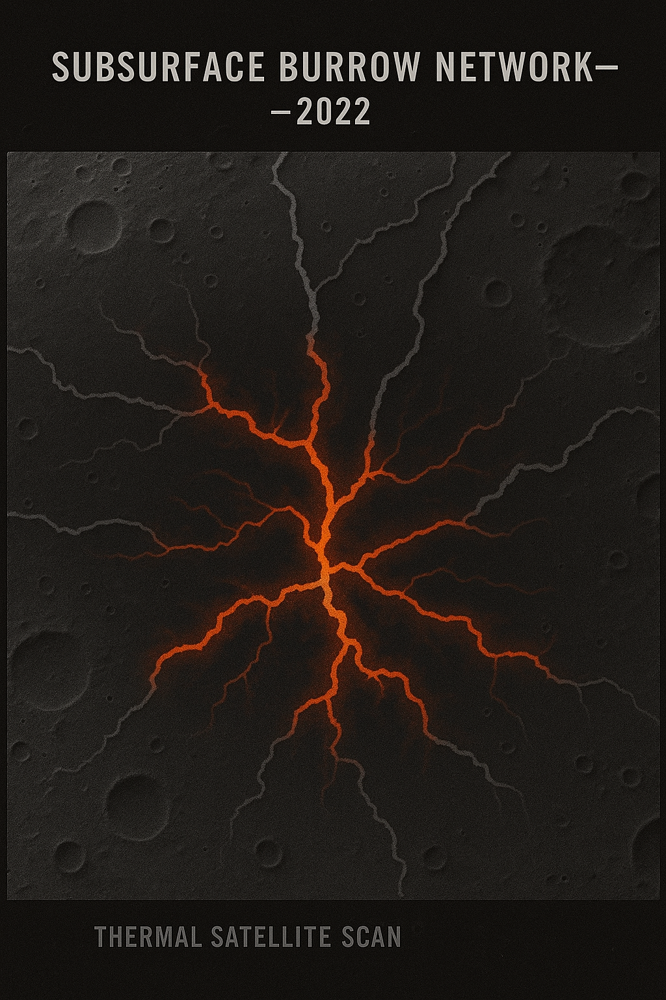
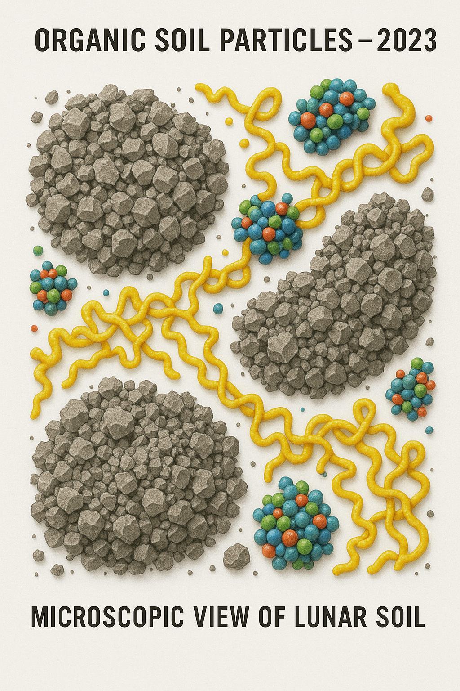
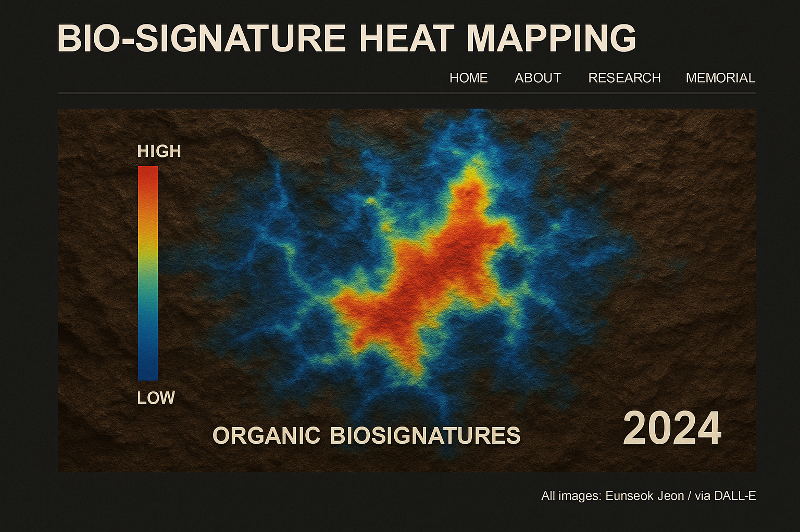

LERD Research Archive

2022 – Subsurface Burrow Network
Thermal scans and radar data revealed an expansive network of tunnel-like voids beneath the Mare Serenitatis region. These formations are geometrically regular, suggesting biological or intelligent patterning.

2023 – Organic Soil Particles
Soil samples retrieved via robotic probes detected trace carbon molecules and a unique protein-like structure. The pattern resembles keratin structures found in Earth mammals.

2024 – Bio-signature Heat Mapping
LERD’s AI-assisted thermal sensors recorded repeating heat patterns in crater interiors during lunar night cycles. These pulses align with known biological respiration rates.